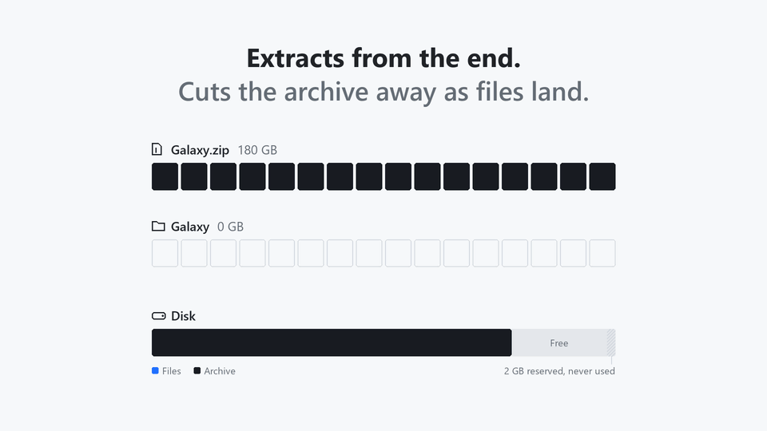

Extract huge archives.
Without double the disk space.
MoltZip extracts ZIP, 7z, RAR and tar archives in place. It cuts the archive away as your files come out, so you only need room for the files, not for the files and the archive together.
Free. Windows 10 and 11, 64-bit. Also for Intel Macs, as .deb, .rpm, MSI and portable, and as a command line tool.

How it works
A 180 GB download that unpacks to 200 GB needs 380 GB with WinRAR, 7-Zip or unzip, because the archive and the files exist at the same time. MoltZip needs a little over 200 GB.
- Checks before touching anything. It replays the whole extraction to find the moment that needs the most space, and tells you if it fits.
- Extracts from the end. Files are written, checked against their CRC-32 and flushed to the disk.
- Cuts the archive behind it. Only then is that part cut off the archive file, and the space is reused for the next files.
What it does
Based on HatchZip's engine and its crash tests. More is on the way: .tar.xz, .tar.zst and .tar.bz2, read-back before every cut, the app in Spanish.
ZIP, 7z, RAR, tar, .tar.gz
ZIP64 and self-extracting .exe, solid and split 7z, RAR 5 and RAR 4 volume sets, .001 splits. Password-protected ZIP, 7z and RAR.
Stops and resumes
Ctrl+C, a crash or a power cut at any moment: run it again and it continues where it stopped. Or restore the rest as a normal archive.
Never overwrites
Existing files are kept unless you choose replace, skip or keep both for each one.
Hostile archives refused
Paths that escape the folder, overlapping entries and dangerous links are refused before anything is deleted.
Keep the archive, too
When there is room for both, extract normally and keep it: --keep-archive or Extract here (keep archive).
Any disk
NTFS, APFS, ext4, btrfs, XFS, and exFAT and FAT32 USB drives. No network access, no telemetry.
Measured
The same 200 MB of game data (21 files), packed by the real tools, extracted on a 220 MiB disk with about 50 MB free. Measured by the HatchZip project on its engine, which MoltZip uses unchanged.
| Archive | unzip / 7-Zip | MoltZip |
|---|---|---|
| ZIP, 180 MB | Ran out of space at file 6 of 21 | Finished, every file byte-identical |
| 7z, 10 solid blocks | Needs 380 MB | Finished in 0.64 s |
| 7z split into 5 volumes | Needs 380 MB | Finished, peak 210 MB used |
| tar, 200 MB | Needs 400 MB | Finished in 0.12 s |
Fedora 43, Intel Core i7-14700HX, NVMe SSD, warm page cache; a 220 MiB tmpfs stood in for a full disk.
All downloads
Every file has a .sha256 checksum next to it on the releases page. Verify a download.
| System | Desktop app and command line | Command line only |
|---|---|---|
| Windows 10 and 11 | Setup, MSI, portable zip | moltzip-x86_64-windows.zip |
| macOS, Apple Silicon | MoltZip-aarch64.dmg | moltzip-aarch64-macos.tar.gz |
| macOS, Intel | MoltZip-x86_64.dmg | moltzip-x86_64-macos.tar.gz |
| Linux x64 | AppImage, .deb, .rpm | moltzip-x86_64-linux.tar.gz |
| Linux ARM64 | moltzip-aarch64-linux.tar.gz |
Or install the command line tool from a terminal. Linux and macOS:
curl -fsSL https://raw.githubusercontent.com/morningstar-code/moltzip/main/install.sh | shWindows, in PowerShell:
irm https://raw.githubusercontent.com/morningstar-code/moltzip/main/install.ps1 | iexThen moltzip check game.zip shows whether it fits and moltzip extract game.zip extracts it. mz is the short name.
The downloads are not code-signed yet. On Windows choose More info, then Run anyway. On macOS, open the app once, then allow it in System Settings, Privacy & Security.
Questions
Is it safe? It deletes my archive.
Nothing changes until the plan fits. A file is written and flushed to the disk before the part of the archive holding it is cut off, so a crash leaves every file either extracted or still in the archive. Every file's checksum is verified, and a damaged one stops the run. When the archive can't be downloaded again, add --verify-first, or keep it with --keep-archive.
How much free space does it need?
About the size of the extracted files plus the largest piece it can free at once: one file for ZIP, tar and RAR, one solid block for 7z. It also keeps 2 GB free. moltzip check shows the exact figure and changes nothing.
What if it crashes or I stop it?
Run the same command or open the same archive again and it continues. To give up, moltzip restore turns what is left into a normal archive any tool opens.
Does it use the internet?
No. It has no networking code and no networking library, no telemetry and no accounts. Its CI fails if one ever enters the dependencies.
How is it related to HatchZip?
MoltZip is built on HatchZip by Yash Bavadiya, an open source extractor under the MIT or Apache-2.0 license, and adds its own improvements. MoltZip itself is free to use but its source code is not public; HatchZip's license and every other third-party notice come with it (third-party notices). Thanks to HatchZip's author for a careful engine.